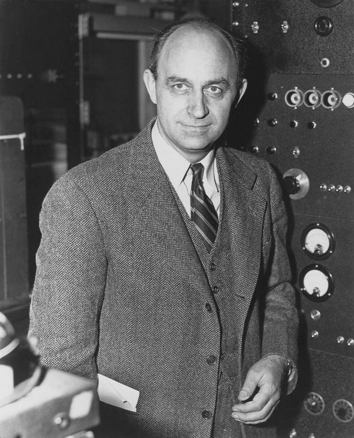

Where are they?
This archive is dedicated to the brilliant physicist Enrico Fermi (1901–1954), who connected the question “Where are they?” to the cosmos, and turned a lunchtime remark into one of the great open questions about our place in it.

The question
In 1950, during a casual lunch at the Los Alamos National Laboratory with his colleagues Edward Teller, Herbert York and Emil Konopinski, Fermi suddenly asked a question that had nothing to do with the topic at the table:
“Where is everybody?” Enrico Fermi, Los Alamos, 1950. The three men later remembered the words slightly differently; Konopinski recalled “But where is everybody?”1
That spontaneous question became the basis of the Fermi paradox. It points to the striking contradiction between the high mathematical probability that advanced civilizations exist somewhere in our vast universe, and the complete lack of evidence of, or contact with, any of them.2
Why this archive exists
Fermi asked the question about the stars. Today it is being asked again, here, by people in official roles: pilots who tracked objects they could not identify, radar and sensor operators, intelligence officers, scientists and members of Congress, many of them testifying under oath. Where Are They tries to answer Fermi's question by organising all the evidence that exists in the public domain about unidentified anomalous phenomena (UAP) and non-human intelligence (NHI), and by making the connections between people, programs, incidents and documents easy to follow.
You can explore it as a network, a timeline, a world map, a library of videos with searchable, time-stamped transcripts, a shelf of books and documentaries, and a ledger of every claim and its status.
How the evidence is weighed
The archive references facts and testimony from people with official roles, on the record: government, Congress, the military (including pilots and sensor operators), intelligence, academia and law enforcement. Every claim is attributed to the person who made it and linked to its source: a document page, a hearing transcript, or the exact second of a video.
Each claim carries a status: Documented (backed by an official record or primary document), On record (stated publicly by a named person, not yet confirmed), or Unverified (still needs a source). Counter-evidence and official explanations are included alongside the claims, because balance is part of credibility. The archive does not make claims of its own.
Open and correctable
The whole archive, from its content files to its code, is public on GitHub. If you spot an error, a missing source or a better one, please open an issue there.
- Eric M. Jones, “Where is everybody?” An account of Fermi's question, Los Alamos National Laboratory report LA-10311-MS, March 1985, based on the recollections of Teller, York and Konopinski. OSTI record · PDF.
- See also Fermi paradox (Wikipedia) for the history of the idea and its many proposed solutions.